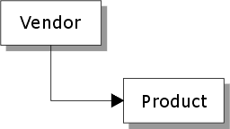
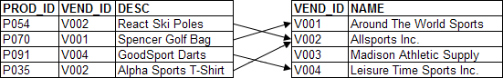

One to One Links
With one-to-one links, one record in the parent table can match only one record in the child table (e.g. one customer to an invoice). There are three type of one-to-one links.
One-to-one (first match) : Using first match, the parent record links to the first matching child record.
One-to-one (closest match) : One-to-one (closest match) links the parent record to the closest matching child record if an exact match cannot be found. If matches do exist, the parent record is linked to the first matching child record.
One-to-one (last match) : The parent record links to the last matching child record or, if there is a single matching record, to it.
The following sample inventory set contains two tables in a one-to-one link.

These records are linked on the VEND_ID field as follows.

The child database in a one-to-one link normally contains unique records (no duplicates). The Vendor table shown above is a good example; only one record is stored for each company, and these records are assigned a unique Vendor identification number.
If there are duplicate records, the duplicates are ignored. A one-to-one link forces a parent record to link to a single matching child record, regardless of how many matching child records exist in the child table. The order of the child records, along with the one-to-one link type (first, last, or closest) that you select, determines which child record matches a particular parent record.
See Also